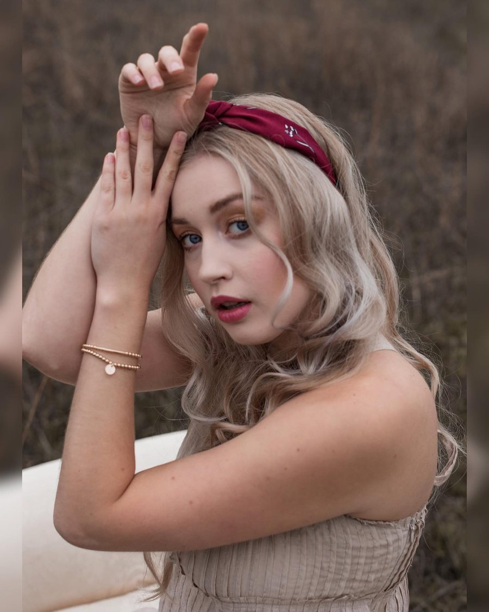

It's the one line everyone at Volare Media knows by heart, and it's the first thing we say to a new client. Never make a video just to make a video.
It sounds obvious. It isn't. Most of the video that gets made for businesses gets made because someone decided it was time to have a video. A competitor has one. The website looks empty without one. Somebody read that video gets more engagement. So a crew shows up, a nice piece gets cut, it goes on the homepage and into a couple of posts, and then it sits there. It looked good. It did nothing.
That's not a production problem. The lighting was fine, the edit was fine. It's an intention problem. Nobody decided what the video was for before it was made, so it wasn't built to do anything in particular, and it didn't.
Intention is the whole job. Everything we do on a shoot, every format we deliver, every cut we make, comes from the answers to a few questions we ask long before a camera comes out.
The four questions we ask before a camera comes out
Why are we making this? Not "to have a video." What has to be different in the business after it runs? More bookings for a slow season. A product people don't know exists yet. A price point that needs explaining. A brand nobody outside town has heard of. One clear goal, in one sentence. If we can't get there together, we're not ready to shoot, and we'll tell you so.
Where will it live? This one changes everything, and it's the one most people skip. A spot that runs on TV needs to land its message with the sound off in a living room. A YouTube pre-roll has five seconds before the skip button appears. An Instagram Reel is vertical, silent by default and competing with a thumb. A homepage video plays to someone who already found you. Same campaign, four completely different jobs. Knowing the placements before the shoot is how one production day turns into a whole package instead of one file you have to stretch across everything.
Who is it for? Not "everyone." The person who actually buys, described well enough that we could cast them. Where they are, what they scroll, what they'd stop for. The answer decides the tone, the pace, the music and the faces on screen.
What is it worth? This is the budget conversation, and it's the one people dread. We think it's the most useful one. Instead of asking "what does a video cost," ask "what is it worth to us if this works." If a campaign brings in ten new customers a month and each one is worth a few hundred dollars, the maths does itself, and the budget stops being a guess. It becomes a decision about return, which is exactly how the rest of your marketing gets judged.
Intention first. Then the camera. Every time.
Budget and return, honestly
A video doesn't cost money because of the camera. It costs money because of the day: the planning, the crew, the cast, the location, the edit, and the versions. So the real question is how much work one day can do.
That's why we build packages instead of single videos. When the placements are decided up front, we shoot the day so it covers all of them: the full-length spot, the horizontal cuts for TV, YouTube and your website, the vertical cuts for Reels, TikTok and Shorts, the six- and fifteen-second versions for paid placements, and the stills for your site and socials. Add the behind-the-scenes coverage, which the cast and crew share on their own channels, and the same day is feeding your marketing for months. Divide the budget by everything it produced, not by one file, and the return looks very different.
It's also how we keep a client from overspending. If the goal is a local audience on social, we won't sell you a broadcast spot. If the goal is a province-wide launch, we'll tell you that a phone and a ring light won't get you there. The intention sets the size of the production, not the other way around.
How the questions shaped the campaign
De Mode en Vogue sells tights, leggings and the small pieces that finish an outfit. The brief was small budget, big reach: spend one day shooting everything we possibly could, and turn it into a simple package of fun, vibrant video that works in every crop and every placement.
Why: put the brand in front of as many people as possible, inside the fashion world and well outside it, so that the next time someone looks in the mirror and feels like their outfit is missing something, they think of De Mode en Vogue. The whole campaign is that one association.
Where: everywhere the customer is. The full spot becomes the hero video on the website, with select clips cut for the site banner. Thirty- and fifteen-second versions run as non-skippable YouTube pre-roll. And because we planned the vertical crop before we rolled, framing every shot so it would survive a 9:16 cut, the same footage runs as ads on Instagram, Facebook and TikTok without looking like a compromise.
Who: people who care how an outfit comes together. Real friends on a real patio in downtown Victoria, brick walls and orange chairs, patterned fishnets and yellow heels. Fun and a little bold, not a runway.
What it's worth: one production day feeding the website, YouTube and three social platforms for the whole season. Divide a small budget by that many placements and the return case makes itself.
The line came out of our own team: when your outfit is missing something. One idea, short enough to read in a Reel and strong enough to carry a thirty-second spot. Then we built the day around it. Jackie Taylor, our producer and writer, produced the shoot and helped steer the creative direction. We brought in models, a hair and makeup team, and an on-set director who works in fashion, so that every frame looks like an editorial rather than an ad about tights.

On-set director
Jessica Young
Jessica is an acclaimed international and local model with more than a decade in the fashion industry, including work featured in Vogue, and a respected pose and runway coach. We brought her on as on-set director to help shape the campaign ideas, work with the models, and direct the posing and movement in front of the camera. It's the difference between people wearing tights on camera and a fashion campaign.
jessicayoungmodel.comPhoto courtesy of Jessica Young
What came out of that one day: the full spot, thirty- and fifteen-second cutdowns for pre-roll, vertical versions for Instagram, Facebook and TikTok, banner clips for the website, a set of stills, and behind-the-scenes coverage for the cast and crew to share on their own channels.
Credits. Client: De Mode en Vogue · Producer and writer: Jackie Taylor · On-set director: Jessica Young · Production: Volare Media.
The campaign is rolling out now. We'll report back on the numbers once it has had a full run, because that's the point of doing it this way. A video you can't measure against a goal is a video that was made just to make a video.
One shoot day. Every screen the customer is on. That's a campaign, not a video.
Before your next video
Write the goal in one sentence. List every place it will run. Describe the one person it's for. Decide what it's worth if it works. If you can do those four things, you're ready to make something that does a job, and we'd love to build it with you. If you can't yet, that's fine too. That conversation is where every good campaign we've made has started.
Filmed and produced by Volare Media on Vancouver Island, for brands, businesses and causes across BC. See what a full package looks like on our marketing packages section, or read how video production budgets actually work in BC.
More from the journal: The camera is the easy part: how we film interviews